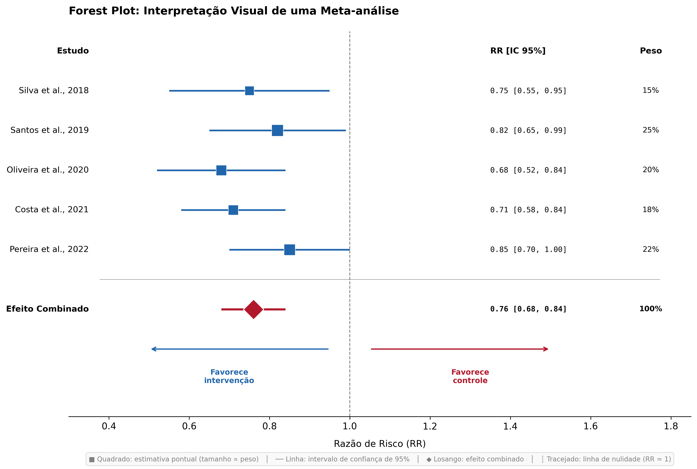

Meta-análise
Síntese quantitativa de resultados de múltiplos estudos
![]()
O que é uma meta-análise?
A meta-análise é uma técnica estatística que combina quantitativamente os resultados de múltiplos estudos independentes sobre uma mesma questão, gerando uma estimativa sumária do efeito (Borenstein et al., 2009).
O termo foi cunhado por Gene Glass em 1976, que a definiu como “a análise estatística de uma grande coleção de resultados de estudos individuais, com o propósito de integrar os achados” (Glass, 1976).
A meta-análise é um método estatístico que combina resultados de estudos independentes para obter uma estimativa mais precisa do efeito de uma intervenção ou da força de uma associação.
Meta-análise e revisão sistemática
É importante distinguir os dois conceitos:
- Revisão sistemática: método de revisão da literatura com busca exaustiva, seleção criteriosa e avaliação de qualidade
- Meta-análise: técnica estatística de combinação de resultados
A meta-análise geralmente ocorre dentro de uma revisão sistemática, mas nem toda revisão sistemática inclui meta-análise. A combinação estatística só é apropriada quando os estudos são suficientemente semelhantes.
Meta-análise não é sinônimo de revisão sistemática. É possível ter:
- Revisão sistemática com meta-análise
- Revisão sistemática sem meta-análise (síntese qualitativa)
- Meta-análise sem revisão sistemática (não recomendado)
Características principais
| Característica | Descrição |
|---|---|
| Objetivo | Estimar efeito combinado |
| Dados necessários | Resultados numéricos dos estudos primários |
| Pré-requisito | Estudos comparáveis (homogeneidade mínima) |
| Produto | Estimativa sumária com intervalo de confiança |
| Apresentação visual | Forest plot (gráfico de floresta) |
Por que fazer uma meta-análise?
1. Aumentar o poder estatístico
Estudos individuais podem ter amostras pequenas e não detectar efeitos reais. Ao combinar dados, aumenta-se o poder para identificar diferenças significativas.
2. Melhorar a precisão da estimativa
A estimativa combinada tem intervalo de confiança mais estreito do que estudos individuais.
3. Resolver controvérsias
Quando estudos individuais apresentam resultados conflitantes, a meta-análise pode esclarecer a direção e magnitude do efeito.
4. Explorar heterogeneidade
Permite investigar por que estudos diferentes encontram resultados diferentes (análises de subgrupo e meta-regressão).
Quando fazer uma meta-análise?
A meta-análise é apropriada quando:
- Os estudos respondem à mesma pergunta de pesquisa
- As populações são comparáveis
- As intervenções são semelhantes
- Os desfechos são medidos de forma similar
- A heterogeneidade entre estudos é aceitável
Combinar estudos muito diferentes pode gerar resultados enganosos. A máxima “garbage in, garbage out” (lixo entra, lixo sai) se aplica: uma meta-análise de estudos ruins produz uma estimativa combinada ruim.
Quando NÃO fazer uma meta-análise?
Evite meta-análise quando:
- Os estudos são muito heterogêneos (populações, intervenções ou desfechos diferentes)
- Há poucos estudos disponíveis (geralmente menos de 3)
- Os dados necessários não estão disponíveis nos estudos primários
- A qualidade dos estudos é muito baixa
Nesses casos, opte por uma síntese qualitativa (narrativa estruturada).
Conceitos fundamentais
Tamanho do efeito (effect size)
É a medida padronizada que quantifica a magnitude do efeito. Os tipos mais comuns são:
| Tipo de desfecho | Medidas de efeito |
|---|---|
| Dicotômico (sim/não) | Risco Relativo (RR), Odds Ratio (OR), Diferença de Risco (RD) |
| Contínuo (escalas, medidas) | Diferença de Médias (MD), Diferença de Médias Padronizada (SMD) |
| Tempo até evento | Hazard Ratio (HR) |
| Correlação | Coeficiente de correlação (r) |
Peso dos estudos
Cada estudo contribui para a estimativa combinada de acordo com seu peso, que geralmente é baseado no tamanho da amostra e na precisão (variância) dos resultados. Estudos maiores e mais precisos têm maior peso.
Modelos de análise
Modelo de efeito fixo: assume que todos os estudos estimam o mesmo efeito verdadeiro. A variação entre estudos é atribuída apenas ao acaso.
Modelo de efeitos aleatórios: assume que os estudos estimam efeitos diferentes, que variam em torno de uma média. É mais conservador e geralmente mais apropriado na prática clínica.
O modelo de efeitos aleatórios é recomendado na maioria das situações clínicas, pois é improvável que estudos realizados em diferentes contextos estimem exatamente o mesmo efeito.
Heterogeneidade
A heterogeneidade refere-se à variabilidade nos resultados entre os estudos. Pode ser:
- Clínica: diferenças nas populações, intervenções ou desfechos
- Metodológica: diferenças no desenho e condução dos estudos
- Estatística: variabilidade além do esperado pelo acaso
Como avaliar a heterogeneidade?
| Medida | Interpretação |
|---|---|
| Q de Cochran | Teste estatístico; p < 0,10 sugere heterogeneidade |
| I² | Percentual da variabilidade devido à heterogeneidade (não ao acaso) |
Interpretação do I² (Higgins et al., 2003):
- 0-40%: heterogeneidade baixa
- 30-60%: heterogeneidade moderada
- 50-90%: heterogeneidade substancial
- 75-100%: heterogeneidade considerável
Alta heterogeneidade (I² > 75%) é um sinal de alerta. Antes de apresentar uma estimativa combinada, investigue as causas através de análises de subgrupo ou meta-regressão.
Forest plot (gráfico de floresta)
O forest plot é a representação visual padrão de uma meta-análise (Lewis; Clarke, 2001). Ele mostra:
- Cada estudo como um quadrado (tamanho proporcional ao peso)
- O intervalo de confiança de cada estudo como linha horizontal
- A estimativa combinada como um losango na parte inferior
- A linha de nulidade (sem efeito) como referência vertical

Nota: Representação esquemática ilustrativa.
Como interpretar?
- Se o IC do losango não cruza a linha de nulidade: efeito estatisticamente significativo
- Se o IC cruza a linha de nulidade: efeito não significativo
- Quanto mais à direita (ou esquerda), maior a magnitude do efeito
- Quanto mais estreito o IC, maior a precisão
Viés de publicação
Estudos com resultados positivos ou significativos têm maior probabilidade de serem publicados. Isso pode distorcer os resultados da meta-análise.
Como detectar?
Funnel plot (gráfico de funil): gráfico de dispersão do tamanho do efeito versus precisão (ou tamanho da amostra). Assimetria sugere viés de publicação.
Teste de Egger: teste estatístico para assimetria do funnel plot (Egger et al., 1997).
O funnel plot é mais informativo quando há pelo menos 10 estudos. Com poucos estudos, é difícil avaliar assimetria.
Análises de sensibilidade e subgrupo
Análise de sensibilidade
Verifica se os resultados são robustos a diferentes decisões metodológicas:
- Excluir estudos com alto risco de viés
- Usar modelo de efeito fixo vs. aleatório
- Excluir um estudo por vez (leave-one-out)
Análise de subgrupo
Investiga se o efeito difere entre grupos definidos a priori:
- Por característica da população (idade, sexo, gravidade)
- Por tipo de intervenção (dose, duração)
- Por qualidade metodológica
Análises de subgrupo devem ser planejadas previamente no protocolo. Análises exploratórias post hoc aumentam o risco de achados espúrios.
Etapas para conduzir uma meta-análise
- Verificar viabilidade: os estudos são comparáveis?
- Extrair dados numéricos: médias, desvios-padrão, frequências
- Escolher a medida de efeito: RR, OR, MD, SMD
- Escolher o modelo: efeito fixo ou aleatórios
- Calcular a estimativa combinada: usando software apropriado
- Avaliar heterogeneidade: Q, I²
- Investigar causas de heterogeneidade: subgrupos, meta-regressão
- Avaliar viés de publicação: funnel plot, teste de Egger
- Realizar análises de sensibilidade
- Interpretar e apresentar resultados: forest plot, tabelas
Softwares para meta-análise
| Software | Características |
|---|---|
| RevMan | Gratuito, desenvolvido pela Cochrane |
| R (metafor, meta) | Gratuito, flexível, requer programação |
| Stata | Pago, comandos específicos (metan, metaan) |
| Comprehensive Meta-Analysis | Pago, interface amigável |
| JASP | Gratuito, interface gráfica |
Vantagens
- Precisão: estimativa mais precisa que estudos individuais
- Poder estatístico: detecta efeitos que estudos pequenos não conseguem
- Objetividade: síntese quantitativa, não apenas narrativa
- Exploração: permite investigar fontes de heterogeneidade
- Clareza visual: forest plot facilita comunicação dos resultados
Limitações
- Dependência dos estudos primários: limitada pela qualidade dos dados disponíveis
- Viés de publicação: estudos negativos podem estar ausentes
- Heterogeneidade: combinar estudos diferentes pode ser enganoso
- Falácia ecológica: resultados agregados podem não se aplicar a indivíduos
- Complexidade: requer conhecimento estatístico para condução e interpretação
Resumo
- Meta-análise é uma técnica estatística, não um tipo de revisão
- Combina resultados de estudos para obter estimativa mais precisa
- Só deve ser realizada quando os estudos são suficientemente semelhantes
- O forest plot é a apresentação visual padrão
- A heterogeneidade (I²) indica variabilidade entre estudos
- O viés de publicação deve ser investigado (funnel plot)
- Análises de sensibilidade verificam a robustez dos resultados
- Requer conhecimento estatístico para condução adequada
Leituras recomendadas
- Borenstein et al. (2009) — Introduction to Meta-Analysis
- Glass (1976) — Primary, secondary, and meta-analysis of research
- Higgins et al. (2003) — Measuring inconsistency in meta-analyses
- Egger et al. (1997) — Bias in meta-analysis detected by a simple, graphical test
- Lewis; Clarke (2001) — Forest plots: trying to see the wood and the trees
Próximo capítulo: Acrônimos PICO